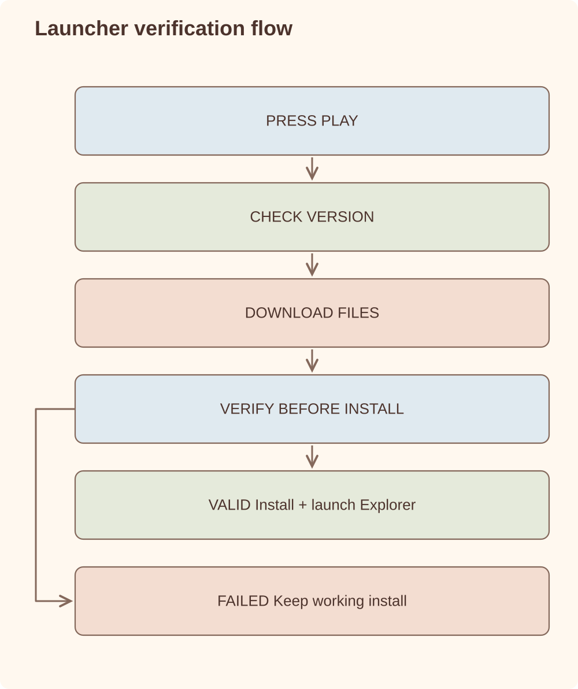

Case study
Launcher & Distribution Platform
We replaced Decentraland's Electron launcher with Rust and Tauri, bringing the initial download from more than 100 MB to about 1 MB.
Rust / Tauri / TypeScript UI on native WebViews / S3 artifact distribution / deep links / Sentry / Windows + macOS
Problem
The launcher is the first part of the product a new user sees. A large download, a stalled update or a process that silently fails can lose that user before the client opens.
The original Electron launcher was heavy for what it needed to do, with an entry-point download over 100 MB. The rework moved the system-level work into Rust: update checks, downloads, verification, process launch, deep links and typed errors. The UI stayed web technology through Tauri, but the bundled-browser cost was removed and the launcher came down to about 1 MB.
Goals
- Keep the download and launch funnel small enough that users do not drop before reaching the product
- Improve install and update reliability - users should always end up on the latest client
- Cut the launcher's own footprint: binary size, memory and startup time
- Support signed builds, release channels and store distribution
- Handle
decentraland://deep links into an app that may not be installed or running yet - Make failures diagnosable: typed errors, user-readable messages, full detail to Sentry
Architecture
One click becomes a verified, recoverable launch.

The Rust core owns everything that can fail in a way that matters: download and verification, install state, version channels, process launch and deep-link routing. Frontend and backend communicate through one union-typed command enum, so the IPC surface is explicit and exhaustively matched rather than a bag of ad-hoc events.
Interesting problems
- How do you debug a user who never reaches the app? Install, update, launch and auth paths are instrumented separately — a funnel, not a single "it failed" event. Errors are typed (
StepError), mapped to concise user messages, and captured with full stack traces in Sentry. - How does a deep link open an app that isn't running? The
decentraland://protocol lands in the launcher's deep-link bridge, which resolves install state first — install, update or launch — and then forwards the intent to the client. - How do you replace an updater with itself? The rework had to ship through the old launcher's own update path and then take over — the one release you cannot get wrong.
- Why Rust and not another Electron? A launcher does system work: filesystem, processes, checksums and protocols. A native core with the OS WebView for UI means the launcher pays for the system work it actually needs, not for a bundled browser runtime. The point was not Rust for its own sake; it was keeping the entry point small enough that download size did not become a funnel problem.
Lessons learned
- Reducing launcher size mattered because it removed friction before the user reached the product.
- We started treating distribution failures with the same seriousness as client crashes.
- The migration itself was the riskiest release because the old launcher had to replace itself.